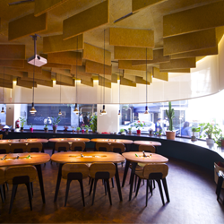
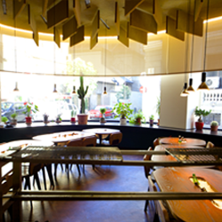
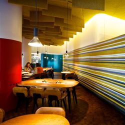
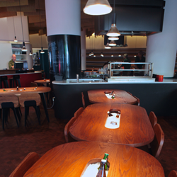
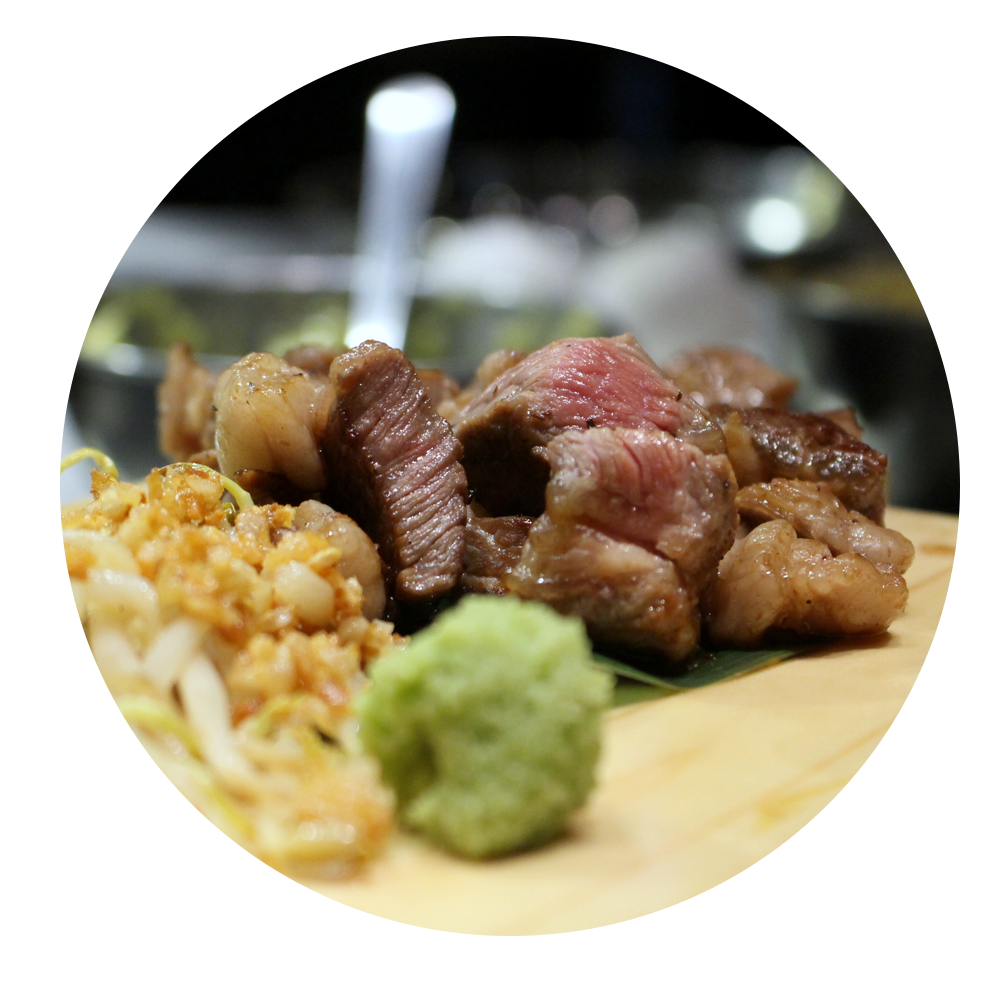
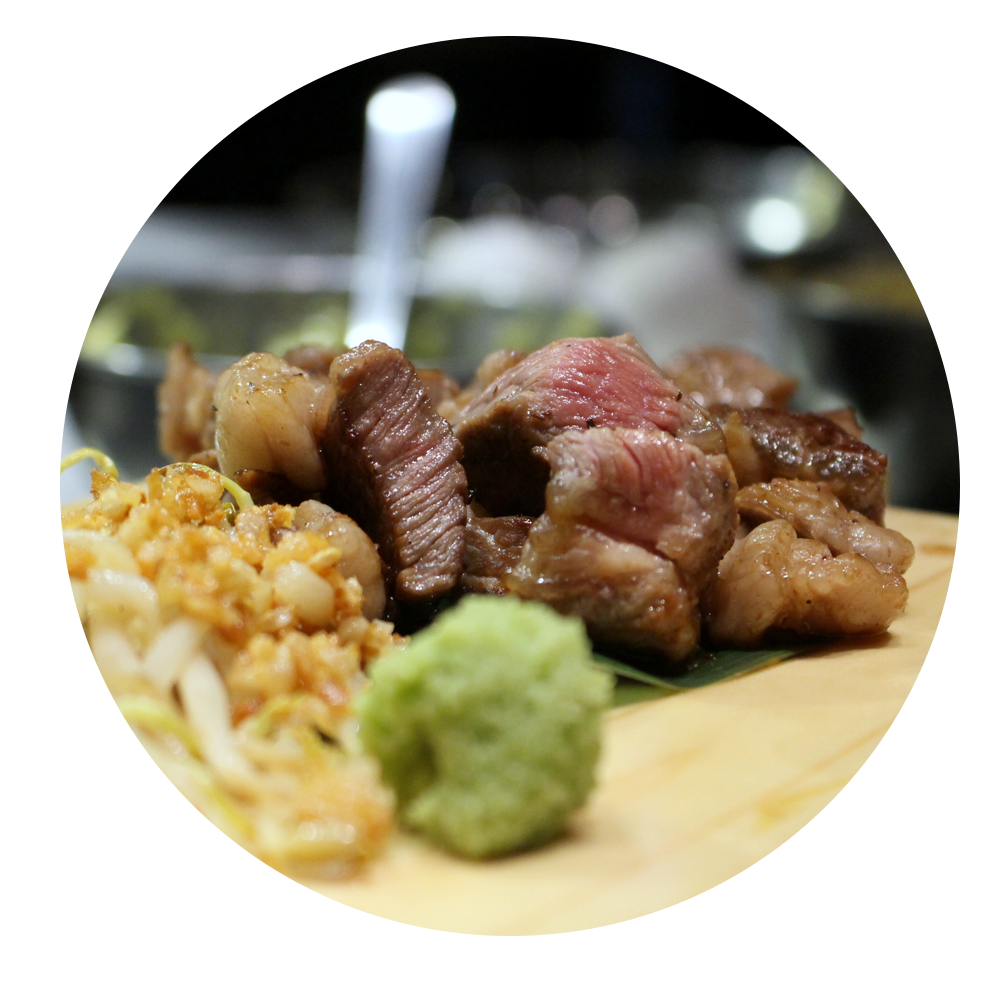
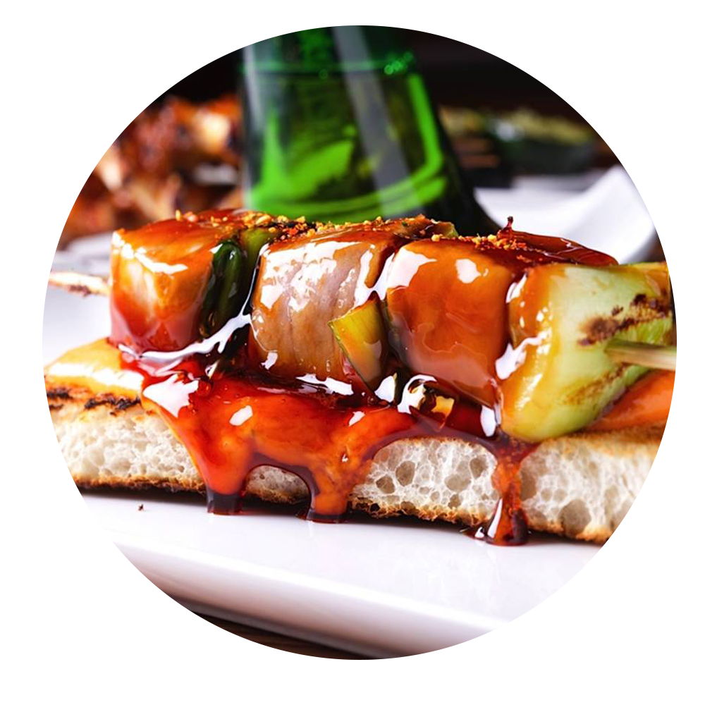
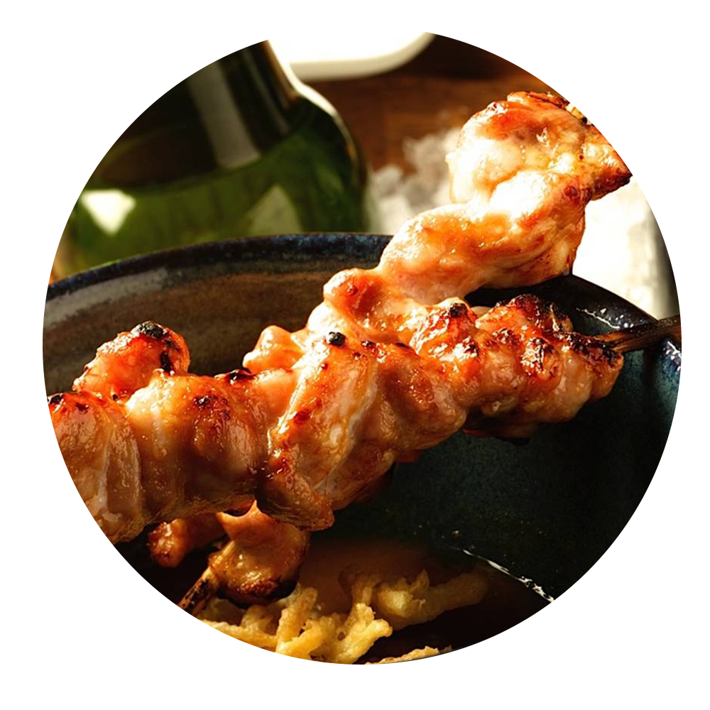
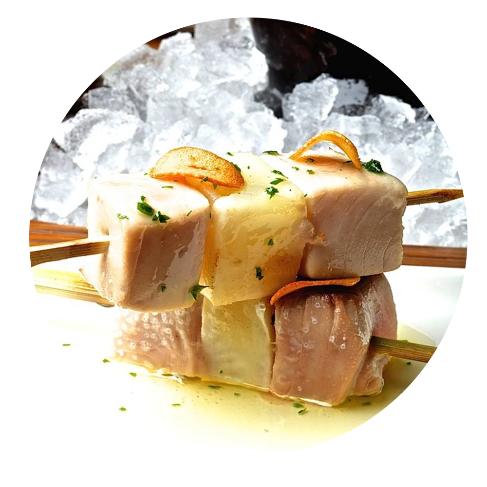

EL RESTAURANTE
   Yakitoro es un espacio inspirado en la tradicional taberna japonesa de yakitori. Le damos el toque español y lo interpretamos a nuestra manera, para que todo sea muy cercano y muy nuestro.
Yakitoro evoca la combinación del nombre japonés "yakitori" (焼き鳥), que define a la brocheta japonesa, y de la palabra "toro", el animal y símbolo español más reconocido.


EL CHEF
Comenzó sus estudios de Cocina con 17 años, compaginando sus estudios con prácticas en algunos de los mejores restaurantes de la ciudad. Al terminar sus estudios se marchó un año a Suiza a aprender con los grandes de la cocina centroeuropea para volver a España y finalmente fundar Nodo, local pionero en la cocina de fusión. Actualmente dirige Yakitoro, situado en el centro de Madrid.
Premios a Destacar
2005 Premio de Madrid Fusión al Mejor Cocinero del año.
2006 Premio Amer al Mejor Cocinero del año.
2009 Premio de El Mundo al Mejor Cocinero en progresión.
2010 Premio de El Mundo al Mejor Restaurante (PandeLujo).
ESPECIALIDADES
 

Plato de comida
Plato de comida
Plato de comida
Plato de comida
SOLICITA INFORMACIÓN PARA RESERVAR
 +34 91 737 14 41
+34 91 737 14 41
 info@yakitoro.com
info@yakitoro.com